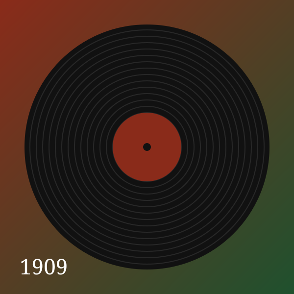

“Dalvorig” / “Dalvorigtsi” — Mihran Damadian; Tashjian Columbia recordings, 1909 and 1910

Background: The 1962 Armenian National Songs, second edition, includes “Dalvorig” and prints the following English translation (James G. Mandalian translation, per the volume's introduction): - “Torrents of hail pelted the plain of Khanasor” - “Wreaking revenge, Dashnaktzakan Fedayee” - “The soldiers of Andranik / Are wreaking revenge on the Kurds” - The Mazrig Kurd is described as panic-stricken and being killed by fedayi bullets. - A later stanza states that the Mazrig tribe was wiped out and Khanasor's green was painted red with blood. - Another stanza says the “avenging Armenian brave” does not harm a Kurdish woman's hair.